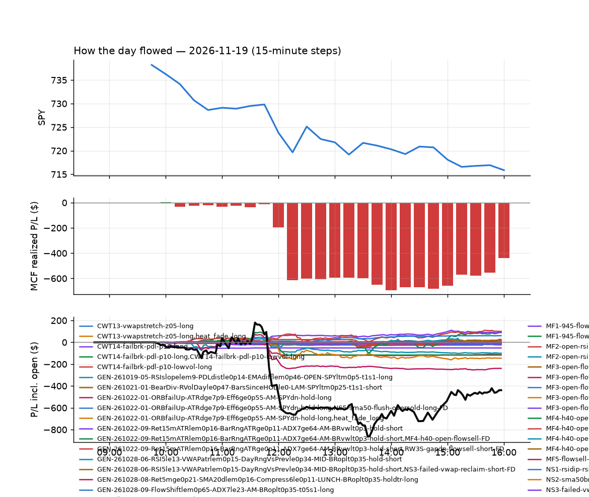
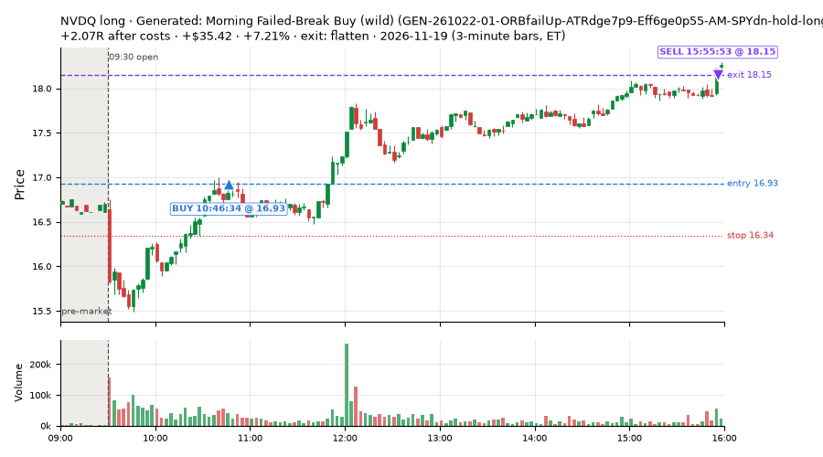
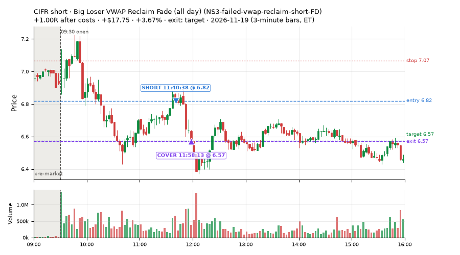
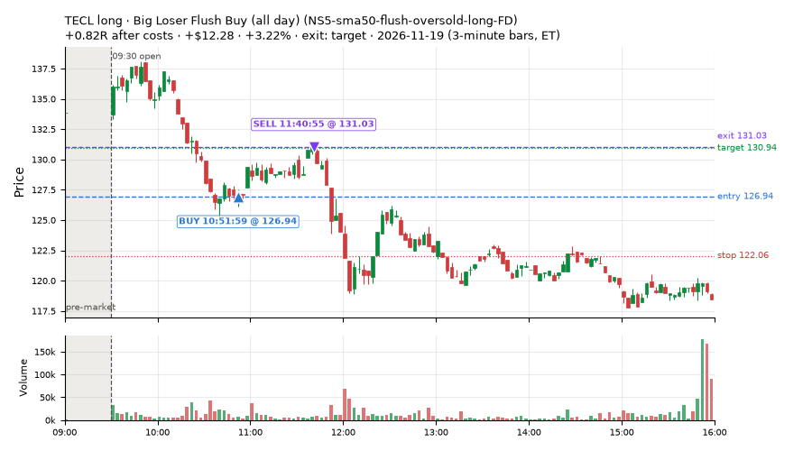
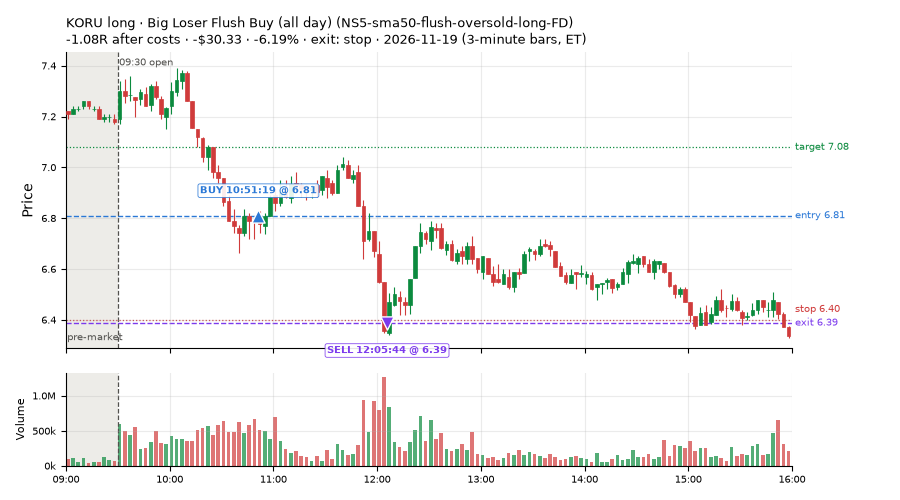
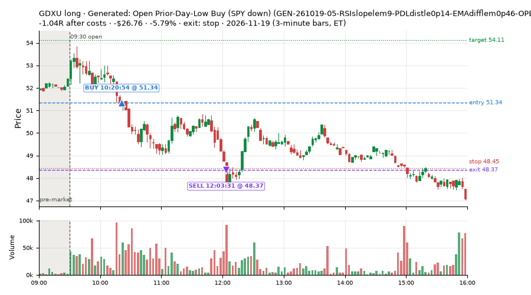
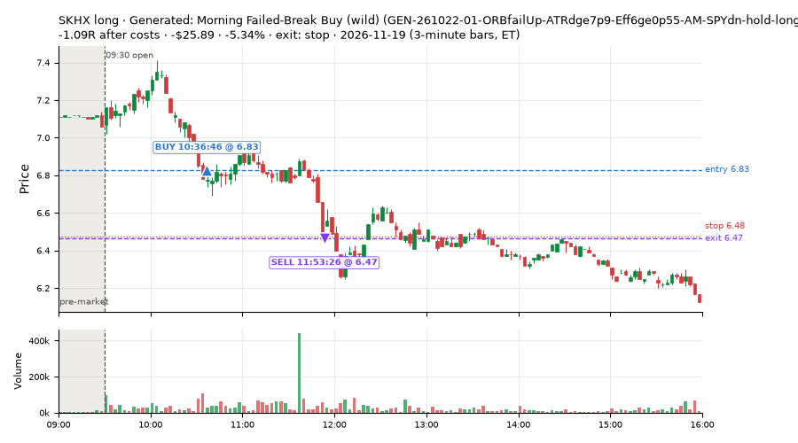
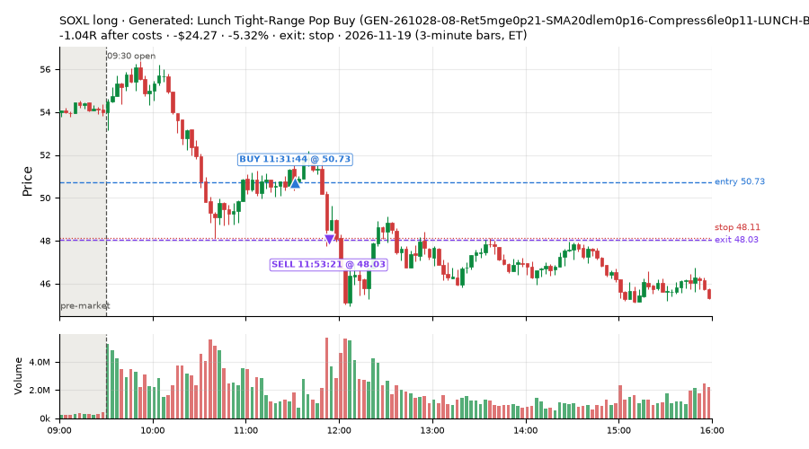
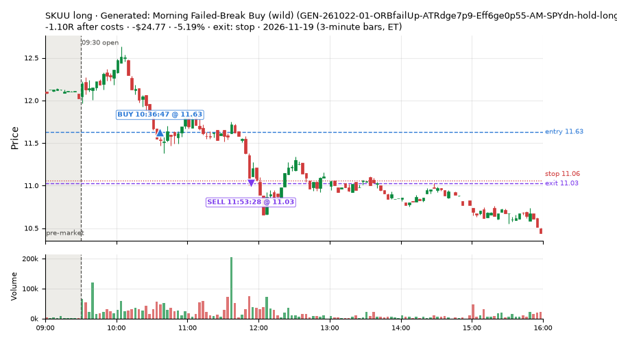

368 trades · win rate 49% · P/L $-438.65
PROBATION: no live setup has passed both locked test periods. 10 owner-directed setups added 2026-10-08 (MarcoFlow top 5 + 5 new), untested live. RW6G1 (RW6 + VWAP band guard) added 2026-10-09, probation.

| Symbol | Setup | Side | In | Out | Entry | Exit | Exit reason | % gained | P/L |
|---|---|---|---|---|---|---|---|---|---|
| NVDQ | Generated: Morning Failed-Break Buy (wild) (GEN-261022-01-ORBfailUp-ATRdge7p9-Eff6ge0p55-AM-SPYdn-hold-long) | long | 10:46 | 15:55 | 16.93 | 18.15 | flatten | +7.21% | $35.42 |
| CIFR | Big Loser VWAP Reclaim Fade (all day) (NS3-failed-vwap-reclaim-short-FD) | short | 11:40 | 11:58 | 6.82 | 6.57 | target | +3.67% | $17.75 |
| TECL | Big Loser Flush Buy (all day) (NS5-sma50-flush-oversold-long-FD) | long | 10:51 | 11:40 | 126.94 | 131.03 | target | +3.22% | $12.28 |
| Symbol | Setup | Side | In | Out | Entry | Exit | Exit reason | % lost | P/L |
|---|---|---|---|---|---|---|---|---|---|
| KORU | NS5-sma50-flush-oversold-long-FD | long | 10:51 | 12:05 | 6.81 | 6.39 | stop | -6.19% | $-30.33 |
| GDXU | GEN-261019-05-RSIslopelem9-PDLdistle0p14-EMAdifflem0p46-OPEN-SPYltm0p5-t1s1-long | long | 10:20 | 12:03 | 51.34 | 48.37 | stop | -5.79% | $-26.76 |
| SKHX | GEN-261022-01-ORBfailUp-ATRdge7p9-Eff6ge0p55-AM-SPYdn-hold-long | long | 10:36 | 11:53 | 6.83 | 6.47 | stop | -5.34% | $-25.89 |
| SOXL | GEN-261028-08-Ret5mge0p21-SMA20dlem0p16-Compress6le0p11-LUNCH-BRoplt0p35-holdtr-long | long | 11:31 | 11:53 | 50.73 | 48.03 | stop | -5.32% | $-24.27 |
| SKUU | GEN-261022-01-ORBfailUp-ATRdge7p9-Eff6ge0p55-AM-SPYdn-hold-long | long | 10:36 | 11:53 | 11.63 | 11.03 | stop | -5.19% | $-24.77 |








Signal to fill: median 2s, 90th percentile 4s (368 trades). Bars close each minute; the order follows the bar close.
Best excursion (MFE): median 0.49R; worst (MAE) median 0.83R. 25% of trades never got +0.25R in our favour; 8 reached +1R and still closed at or below 0.
| Symbol | Setup | Best R | Worst R | Closed R |
|---|---|---|---|---|
| UNH | GEN-261022-09-Ret15mATRlem0p16-BarRngATRge0p11-ADX7ge64-AM-BRvwlt0p3-hold-short | +1.99 | -1.02 | -1.06 |
| WDC | GEN-261022-01-ORBfailUp-ATRdge7p9-Eff6ge0p55-AM-SPYdn-hold-long | +1.30 | -1.04 | -1.08 |
| CBRS | GEN-261019-05-RSIslopelem9-PDLdistle0p14-EMAdifflem0p46-OPEN-SPYltm0p5-t1s1-long | +1.24 | -1.06 | -1.00 |
| CORZ | NS5-sma50-flush-oversold-long-FD | +0.99 | -1.30 | -1.15 |
| MCHP | GEN-261022-01-ORBfailUp-ATRdge7p9-Eff6ge0p55-AM-SPYdn-hold-long | +1.07 | -1.20 | -1.04 |
| Entry time | Trades | Win | Avg R | P/L |
|---|---|---|---|---|
| 09:50-10:30 | 82 | 41% | -0.31 | $-123.20 |
| 10:30-11:30 | 126 | 42% | -0.34 | $-386.31 |
| 11:30-13:00 | 72 | 49% | -0.20 | $-73.38 |
| 13:00-14:00 | 71 | 61% | -0.05 | $117.61 |
| 14:00-16:00 | 17 | 82% | +0.39 | $26.63 |
| Setup | Trades | Win | Avg R after costs | Adj R (net of SPY) | Avg R ex-market (all sessions) | P/L |
|---|---|---|---|---|---|---|
| Stretched Below VWAP Bounce (CWT13-vwapstretch-z05-long) | 10.0 | 60% | -0.11 | +0.19 | +0.13 (beta +1.01, n 10) | $-6.53 |
| Failed Prior-Day-Low Break Long (CWT14-failbrk-pdl-p10-long) | 29.0 | 31% | -0.66 | +0.18 | -0.45 (beta +0.35, n 29) | $-51.75 |
| Failed Prior-Day-Low Break Long (0.1 ATR, low volume) [fill] (CWT14-failbrk-pdl-p10-lowvol-long) | 11.0 | 18% | -0.87 | +0.42 | -0.24 (beta +0.95, n 11) | $-17.19 |
| Generated: Open Prior-Day-Low Buy (SPY down) (GEN-261019-05-RSIslopelem9-PDLdistle0p14-EMAdifflem0p46-OPEN-SPYltm0p5-t1s1-long) | 23.0 | 30% | -0.41 | +0.35 | +0.08 (beta +0.43, n 23) | $-99.93 |
| Generated: Late-AM Divergence Short (quiet) (GEN-261021-01-BearDiv-RVolDayle0p47-BarsSinceHODle0-LAM-SPYltm0p25-t1s1-short) | 1.0 | 0% | -1.11 | -0.86 | – | $-2.94 |
| Generated: Morning Failed-Break Buy (wild) (GEN-261022-01-ORBfailUp-ATRdge7p9-Eff6ge0p55-AM-SPYdn-hold-long) | 24.0 | 8% | -0.85 | -0.55 | -1.40 (beta -0.68, n 24) | $-238.66 |
| Generated: Morning Strong-Trend Drop Short (GEN-261022-09-Ret15mATRlem0p16-BarRngATRge0p11-ADX7ge64-AM-BRvwlt0p3-hold-short) | 9.0 | 33% | -0.50 | -1.46 | -0.99 (beta -0.67, n 9) | $-23.77 |
| Generated: Midday Oversold Short (quiet day) (GEN-261028-06-RSI5le13-VWAPatrlem0p15-DayRngVsPrevle0p34-MID-BRoplt0p35-hold-short) | 2.0 | 50% | +0.17 | -0.81 | – | $3.35 |
| Generated: Lunch Tight-Range Pop Buy (GEN-261028-08-Ret5mge0p21-SMA20dlem0p16-Compress6le0p11-LUNCH-BRoplt0p35-holdtr-long) | 10.0 | 10% | -1.02 | -0.55 | -1.64 (beta -0.55, n 10) | $-112.77 |
| Generated: Morning Selling-Burst Buy (GEN-261028-09-FlowShiftlem0p65-ADX7le23-AM-BRoplt0p35-t05s1-long) | 20.0 | 65% | -0.21 | +0.20 | +0.04 (beta +0.59, n 20) | $-12.92 |
| Prior-Day Low Sweep Reversal to VWAP (LIQ-pdl-sweep-open15-vwap-long) | 1.0 | 0% | -0.38 | -0.16 | – | $-1.55 |
| Early Sellers Above VWAP (all day) (MF1-945-flowsell-vwapup-FD) | 4.0 | 25% | -0.54 | -0.69 | -0.36 (beta -1.97, n 117) | $-1.61 |
| Early Sellers, Mid-High RSI (all day) (MF2-open-rsimidhi-flowsell-FD) | 30.0 | 37% | -0.39 | -0.31 | -0.42 (beta -1.62, n 30) | $16.11 |
| Early Sellers into a Pop (all day) (MF3-open-flowsell-rsi5hi-FD) | 12.0 | 58% | +0.13 | -0.61 | -0.16 (beta -0.84, n 174) | $26.58 |
| Early Sellers, Strong Heat (all day) (MF4-h40-open-flowsell-FD) | 34.0 | 79% | +0.13 | -0.02 | -0.26 (beta -1.27, n 34) | $89.53 |
| Sellers into Strength (full-day copy) (MF5-flowsell-vwapup-rsi5hi-FD) | 4.0 | 25% | -0.12 | -1.56 | -0.08 (beta -0.89, n 102) | $0.96 |
| Big Gainer Dip-and-Pop (all day) (NS1-rsidip-rsi5pop-long-FD) | 2.0 | 100% | +0.35 | +0.49 | – | $5.38 |
| Big Gainer Average Reclaim Fade (NS2-sma50break-overbought-short) owner-directed; holdouts once: Sep-Oct -0.115R n76, Apr-Jun +0.021R n587 | 1.0 | 100% | +0.37 | +0.48 | -0.24 (beta -1.34, n 14) | $5.40 |
| Big Loser VWAP Reclaim Fade (all day) (NS3-failed-vwap-reclaim-short-FD) | 25.0 | 92% | +0.52 | -0.06 | -0.21 (beta -0.89, n 177) | $92.34 |
| Big Loser Flush Buy (all day) (NS5-sma50-flush-oversold-long-FD) | 21.0 | 33% | -0.50 | -0.31 | -0.03 (beta +1.12, n 68) | $-116.89 |
| Gap-Down Heavy-Selling Short, no RSI condition (all day) (RW3S-gapdn-flowsell-short-FD) | 60.0 | 67% | +0.21 | -0.57 | -0.14 (beta -0.54, n 191) | $100.40 |
| Opening-Range Breakdown Buy (all day) (ST1-ordn-long-pm-t05s1-FD) | 4.0 | 75% | +0.11 | +0.08 | -0.02 (beta +0.86, n 53) | $-7.20 |
| Afternoon Blow-off Short (all day) (exhaustion_short-FD) | 11.0 | 91% | +0.80 | +0.23 | +0.12 (beta -0.94, n 11) | $60.58 |
| Midday Gap-Up Dip Buy (heat_fade_long) failed Apr-Jun holdout: -0.138R/trade over 1043 trades | 20.0 | 10% | -0.83 | -0.52 | +0.12 (beta +1.38, n 157) | $-145.58 |
Market direction (SPY, beta 1) accounted for $-22.72 of today's $-438.65; the rest ($-415.93) came from the setups themselves. Avg R net of SPY: -0.23 (incl. a hedge leg's cost; report only).
51 setups live today. Today: 1166 signals, 368 taken, 23 lost because another setup held the symbol (2%). Since 2026-10-21 (22 sessions): 30996 signals, 9700 taken, 1344 lost to other setups (4%). Peak open positions today 135 of 300 slots. Earnings blackout removed 209 symbols before scanning.
Simulated playing time (not live): 21238 what-if trades of signals not taken, avg -0.04R, 55% winners; of them 1343 lost to another setup (avg -0.03R).
Crowded out: NS2-sma50break-overbought-short, MF5-flowsell-vwapup-rsi5hi · Starved: MF1-945-flowsell-vwapup-FD, heat_fade_long, heat_fade_long-FD, heat_fade_short-FD
| Prio | Setup | Today sig / taken | Sessions | Signals / taken / trades | Taken/day | Expected/day | Lost to other setups | Lost to (setup n) | Top skip reasons | SIMULATED: not-taken n / avg R / win | Verdict |
|---|---|---|---|---|---|---|---|---|---|---|---|
| 1 | Opening-Range Breakdown Buy (all day) ST1-ordn-long-pm-t05s1-FD | 8 / 4 | 22 | 85 / 53 / 53 | 2.41 | 3.49 | 2 | heat_fade_short-FD 1, NS3-failed-vwap-reclaim-short-FD 1 | spread / quote / size 21, slots full 3, daily loss cap 3 | 32 / -0.07R / 53% | slow 12.0 entries/week; ~5 weeks to 60 trades |
| 2 | Big Gainer Average Reclaim Fade NS2-sma50break-overbought-short | 5 / 1 | 22 | 252 / 14 / 14 | 0.64 | 5.74 | 129 | NS2-sma50break-overbought-short-FD 115, RW6-ns2-up3-short-FD 56, CWT12-coil-k4-long 10 | symbol held by another setup 129, spread / quote / size 55, not shortable / shorts off 32 | 238 / +0.39R / 75% | crowded-out 129 of 252 signals (51%) lost to setups already holding the symbol |
| 3 | Early Sellers Above VWAP (all day) MF1-945-flowsell-vwapup-FD | 10 / 4 | 22 | 405 / 117 / 117 | 5.32 | 23.94 | 8 | CWT12-coil-k4-long 5, CWT14-failbrk-orl-p05-long 2, CWT12-coil-k6-long 1 | daily loss cap 146, spread / quote / size 93, not shortable / shorts off 15 | 288 / -0.16R / 33% | starved 5.32 entries/day vs ~23.94 expected |
| 4 | Midday Gap-Up Dip Buy heat_fade_long | 166 / 20 | 22 | 396 / 157 / 157 | 7.14 | 30.36 | 22 | heat_fade_long-FD 12, NS3-failed-vwap-reclaim-short-FD 3, RW4-ns3-adv150-short-FD 3 | daily loss cap 143, spread / quote / size 58, symbol held by another setup 22 | 239 / +0.18R / 60% | starved 7.14 entries/day vs ~30.36 expected |
| 5 | Gap-Down Bounce Rejection Short (5% gap) CWT09-gapdn-bounce-g5-lowerhalf-short | 3 / 0 | 22 | 1006 / 158 / 158 | 7.18 | – | 13 | CWT14-failbrk-pdl-p05-lowvol-long 4, CWT12-coil-k4-long 3, CWT14-failbrk-pdl-p05-long 3 | not shortable / shorts off 584, daily loss cap 99, spread / quote / size 90 | 844 / -0.04R / 47% | ok 35.9 entries/week |
| 6 | Big Loser VWAP Reclaim Fade (all day) NS3-failed-vwap-reclaim-short-FD | 34 / 25 | 14 | 958 / 177 / 177 | 12.64 | 22.02 | 75 | NS3-failed-vwap-reclaim-short-FD 21, ST2-slope20up-long-am-t05s1-FD 19, RW4-ns3-adv150-short-FD 19 | daily loss cap 411, not shortable / shorts off 125, slots full 85 | 781 / -0.04R / 44% | ok 63.2 entries/week |
| 7 | Early Sellers into a Pop (all day) MF3-open-flowsell-rsi5hi-FD | 18 / 12 | 13 | 327 / 174 / 174 | 13.38 | 24.16 | 4 | ST2-slope20up-long-am-t05s1-FD 1, heat_fade_long 1, CWT14-failbrk-orl-p05-long 1 | daily loss cap 53, spread / quote / size 30, broker rejected 27 | 153 / -0.03R / 50% | ok 66.9 entries/week |
| 8 | Sellers into Strength (full-day copy) MF5-flowsell-vwapup-rsi5hi-FD | 6 / 4 | 13 | 198 / 102 / 102 | 7.85 | 15.47 | 4 | MF1-945-flowsell-vwapup-FD 3, MF3-open-flowsell-rsi5hi-FD 3, RW3S-gapdn-flowsell-short-FD 2 | broker rejected 33, daily loss cap 31, spread / quote / size 16 | 96 / -0.15R / 44% | ok 39.2 entries/week |
| 9 | Big Loser Flush Buy (all day) NS5-sma50-flush-oversold-long-FD | 26 / 21 | 12 | 122 / 68 / 68 | 5.67 | 6.32 | 8 | NS3-failed-vwap-reclaim-short-FD 4, RW4-ns3-adv150-short-FD 4, ST4-emadn-long-am-t1s05-FD 1 | daily loss cap 26, spread / quote / size 12, symbol held by another setup 8 | 54 / -0.02R / 50% | ok 28.3 entries/week |
| 10 | Big Gainer Fade, VWAP Band Guard (all day) RW6G1-ns2-up3-vwap2sd-short-FD | 0 / 0 | 12 | 84 / 37 / 37 | 3.08 | 3.73 | 4 | RW6-ns2-up3-short-FD 3, NS2-sma50break-overbought-short-FD 2, RW6G1-ns2-up3-vwap2sd-short-FD 2 | not shortable / shorts off 35, symbol held by another setup 4, broker rejected 4 | 47 / +0.17R / 62% | ok 15.4 entries/week |
| 11 | Gap-Down Heavy-Selling Short, no RSI condition (all day) RW3S-gapdn-flowsell-short-FD | 106 / 60 | 4 | 571 / 191 / 191 | 47.75 | – | 14 | CWT12-coil-k4-long 3, GEN-261019-05-RSIslopelem9-PDLdistle0p14-EMAdifflem0p46-OPEN-SPYltm0p5-t1s1-long 3, CWT14-failbrk-pdl-p05-long 2 | daily loss cap 186, spread / quote / size 142, not shortable / shorts off 34 | 380 / +0.07R / 57% | ok 238.8 entries/week |
| 12 | Generated: Late Uptrend Dip Buy (up day) GEN-261026-09-BBpctle0p3-SMA20slopege0p46-FromPCATRge0p45-LATE-BRvwgt0p6-t05s05-long | 0 / 0 | 2 | 1 / 1 / 1 | 0.50 | – | 0 | – | – | 0 / – | slow 2.5 entries/week; ~24 weeks to 60 trades |
| 13 | Generated: Late RSI Drop Short (big bar) GEN-261020-02-RSIslopelem19-BarRngATRge0p14-BuyPressge0p17-LATE-BRvwgt0p7-t05s1-short | 0 / 0 | 2 | 0 / 0 / 0 | 0.00 | – | 0 | – | – | 0 / – | quiet - wait no signals in 2 session(s); too early to tell |
| 14 | Generated: Lunch RSI(2) Flush Buy (volatile) GEN-261021-08-RSI2le0-Ret15mATRge0p16-ATRdge3p6-LUNCH-QQQgt0p6-holdtr-long | 0 / 0 | 2 | 0 / 0 / 0 | 0.00 | – | 0 | – | – | 0 / – | quiet - wait no signals in 2 session(s); too early to tell |
| 15 | Podcast: Breadth Thrust, Strong Large Caps (observation) GEN-POD1022-01-thrasher-breadth-thrust-stocks-holdtr-long | 0 / 0 | 2 | 0 / 0 / 0 | 0.00 | – | 0 | – | – | 0 / – | quiet - wait no signals in 2 session(s); too early to tell |
| 16 | Backside VWAP-Test Short (big runner) CWT04-backside-vwaptest-a25-short | 0 / 0 | 2 | 0 / 0 / 0 | 0.00 | – | 0 | – | – | 0 / – | quiet - wait no signals in 2 session(s); too early to tell |
| 17 | Generated: Late-AM VWAP Pop Short (SPY up) GEN-261023-01-VWAPxUp-VWAPatrge0p33-LAM-SPYgt0p5-t05s05-short | 0 / 0 | 2 | 0 / 0 / 0 | 0.00 | – | 0 | – | – | 0 / – | quiet - wait no signals in 2 session(s); too early to tell |
| 18 | Generated: PM New-Low Buy (strong mkt) GEN-261023-05-NewLOD-SMA20dlem0p94-ORLdistlem0p24-PM-BRopgt0p65-hold-long | 0 / 0 | 2 | 0 / 0 / 0 | 0.00 | – | 0 | – | – | 0 / – | quiet - wait no signals in 2 session(s); too early to tell |
| 19 | Generated: Open Below-VWAP Turn Buy (QQQ up) GEN-261021-10-MACDhge0p079-VWAPbarslem7-OPEN-QQQup-t1s05-long | 0 / 0 | 2 | 0 / 0 / 0 | 0.00 | – | 0 | – | – | 0 / – | quiet - wait no signals in 2 session(s); too early to tell |
| 20 | Generated: Open RSI Pop Reversal Short GEN-261029-10-RSIslopege19-Ret5mlem0p21-EMAdiffge0p29-OPEN-BRvwgt0p5-t1s1-short | 0 / 0 | 2 | 0 / 0 / 0 | 0.00 | – | 0 | – | – | 0 / – | quiet - wait no signals in 2 session(s); too early to tell |
| 21 | Generated: Lunch VWAP Reclaim Buy GEN-261028-03-EMAdChgge0p15-VWAPxUp-Since950ATRlem0p43-LUNCH-SPYgt0p25-hold-long | 0 / 0 | 2 | 0 / 0 / 0 | 0.00 | – | 0 | – | – | 0 / – | quiet - wait no signals in 2 session(s); too early to tell |
| 22 | Generated: PM Big Red Bar Buy (up day) GEN-261028-10-BarRngATRge0p18-Flow3lem0p54-FromPCATRge0p28-PM-SPYgt0p5-hold-long | 0 / 0 | 2 | 0 / 0 / 0 | 0.00 | – | 0 | – | – | 0 / – | quiet - wait no signals in 2 session(s); too early to tell |
| 23 | Generated: Late Failed-Breakdown Pop Short GEN-261023-09-ORBfailDn-Ret15mge0p54-LATE-BRvwgt0p7-holdtr-short | 0 / 0 | 2 | 0 / 0 / 0 | 0.00 | – | 0 | – | – | 0 / – | quiet - wait no signals in 2 session(s); too early to tell |
| 24 | Generated: PM Volatile Dip Buy (strong mkt) GEN-261023-02-Ret15mATRlem0p068-EMAdChgge0p028-ATRdge6-PM-BRopgt0p65-hold-long | 0 / 0 | 2 | 0 / 0 / 0 | 0.00 | – | 0 | – | – | 0 / – | quiet - wait no signals in 2 session(s); too early to tell |
| 25 | Afternoon Exhaustion Short, Gap-Down, SPY Up (near-miss) NM-RWR1-exh150-gapdn-spyup-pm-short | 0 / 0 | 2 | 0 / 0 / 0 | 0.00 | – | 0 | – | – | 0 / – | quiet - wait no signals in 2 session(s); too early to tell |
| 26 | Generated: Late Failed-Breakout Buy (trend) GEN-261022-02-ORBfailUp-EMAdChglem0p094-ADX7ge57-LATE-BRvwgt0p7-t05s1-long | 0 / 0 | 2 | 0 / 0 / 0 | 0.00 | – | 0 | – | – | 0 / – | quiet - wait no signals in 2 session(s); too early to tell |
| 27 | Prior-Day Low Sweep Reversal to VWAP LIQ-pdl-sweep-open15-vwap-long | 1 / 1 | 2 | 1 / 1 / 1 | 0.50 | – | 0 | – | – | 0 / – | slow 2.5 entries/week; ~24 weeks to 60 trades |
| 28 | Generated: Lunch Wide-Range Short (SPY down) GEN-261021-03-RSI5le34-Ret15mATRge0p12-DayRngVsPrevge1p2-LUNCH-SPYltm0p25-t05s1-short | 11 / 0 | 2 | 13 / 1 / 1 | 0.50 | – | 0 | – | not shortable / shorts off 9, spread / quote / size 3 | 12 / -0.12R / 58% | slow 2.5 entries/week; ~24 weeks to 60 trades |
| 29 | Generated: Midday Oversold Short (quiet day) GEN-261028-06-RSI5le13-VWAPatrlem0p15-DayRngVsPrevle0p34-MID-BRoplt0p35-hold-short | 2 / 2 | 2 | 2 / 2 / 2 | 1.00 | – | 0 | – | – | 0 / – | slow 5.0 entries/week; ~12 weeks to 60 trades |
| 30 | Generated: Morning Overbought Coil Buy GEN-261029-05-BearDiv-RSI14ge78-Compress6le0p091-AM-BRopgt0p5-t05s05-long | 0 / 0 | 2 | 0 / 0 / 0 | 0.00 | – | 0 | – | – | 0 / – | quiet - wait no signals in 2 session(s); too early to tell |
| 31 | Generated: Late-AM Divergence Short (quiet) GEN-261021-01-BearDiv-RVolDayle0p47-BarsSinceHODle0-LAM-SPYltm0p25-t1s1-short | 1 / 1 | 2 | 4 / 1 / 1 | 0.50 | – | 0 | – | other 3 | 3 / -1.15R / 0% | slow 2.5 entries/week; ~24 weeks to 60 trades |
| 32 | Generated: Morning Strong-Trend Drop Short GEN-261022-09-Ret15mATRlem0p16-BarRngATRge0p11-ADX7ge64-AM-BRvwlt0p3-hold-short | 15 / 9 | 1 | 15 / 9 / 9 | 9.00 | – | 0 | – | spread / quote / size 3, not shortable / shorts off 2, price through stop/target 1 | 6 / -0.74R / 17% | ok 45.0 entries/week |
| 33 | Failed Prior-Day-Low Break Long CWT14-failbrk-pdl-p10-long | 226 / 29 | 1 | 226 / 29 / 29 | 29.00 | – | 0 | – | daily loss cap 185, spread / quote / size 12 | 197 / -0.22R / 52% | ok 145.0 entries/week |
| 34 | Generated: Morning Overbought Drop Short GEN-261029-08-Ret15mlem0p36-Flow3lem0p54-RSI14ge65-AM-SPYgt0p5-hold-short | 0 / 0 | 1 | 0 / 0 / 0 | 0.00 | – | 0 | – | – | 0 / – | quiet - wait no signals in 1 session(s); too early to tell |
| 35 | Generated: Open Prior-Day-Low Buy (SPY down) GEN-261019-05-RSIslopelem9-PDLdistle0p14-EMAdifflem0p46-OPEN-SPYltm0p5-t1s1-long | 32 / 23 | 1 | 32 / 23 / 23 | 23.00 | – | 2 | RW3S-gapdn-flowsell-short-FD 2 | spread / quote / size 7, symbol held by another setup 2 | 9 / -0.34R / 33% | ok 115.0 entries/week |
| 36 | Early Sellers, Strong Heat (all day) MF4-h40-open-flowsell-FD | 55 / 34 | 1 | 55 / 34 / 34 | 34.00 | 16.45 | 1 | GEN-261019-05-RSIslopelem9-PDLdistle0p14-EMAdifflem0p46-OPEN-SPYltm0p5-t1s1-long 1 | not shortable / shorts off 9, spread / quote / size 9, symbol held by another setup 1 | 20 / +0.03R / 75% | ok 170.0 entries/week |
| 37 | Failed Prior-Day-Low Break Long (0.1 ATR, low volume) [fill] CWT14-failbrk-pdl-p10-lowvol-long | 110 / 11 | 1 | 110 / 11 / 11 | 11.00 | – | 0 | – | daily loss cap 86, spread / quote / size 13 | 99 / -0.36R / 43% | ok 55.0 entries/week |
| 38 | Generated: Morning RSI Surge Buy GEN-261020-07-RSIslopege19-LowWickge0p33-ATRdge4p4-AM-BRvwgt0p7-hold-long | 0 / 0 | 1 | 0 / 0 / 0 | 0.00 | – | 0 | – | – | 0 / – | quiet - wait no signals in 1 session(s); too early to tell |
| 39 | Generated: Midday Gap-Up Failed-Break Buy GEN-261021-06-ORBfailUp-Gapge1p2-MID-BRopgt0p5-hold-long | 0 / 0 | 1 | 0 / 0 / 0 | 0.00 | – | 0 | – | – | 0 / – | quiet - wait no signals in 1 session(s); too early to tell |
| 40 | Stretched Below VWAP Bounce CWT13-vwapstretch-z05-long | 134 / 10 | 1 | 134 / 10 / 10 | 10.00 | – | 0 | – | daily loss cap 121, spread / quote / size 3 | 124 / -0.04R / 65% | ok 50.0 entries/week |
| 41 | Early Sellers, Mid-High RSI (all day) MF2-open-rsimidhi-flowsell-FD | 50 / 30 | 1 | 50 / 30 / 30 | 30.00 | 10.09 | 3 | RW3S-gapdn-flowsell-short-FD 2, MF1-945-flowsell-vwapup-FD 1, MF2-open-rsimidhi-flowsell-FD 1 | spread / quote / size 12, symbol held by another setup 3, daily loss cap 2 | 20 / +0.29R / 60% | ok 150.0 entries/week |
| 42 | Generated: Morning Selling-Burst Buy GEN-261028-09-FlowShiftlem0p65-ADX7le23-AM-BRoplt0p35-t05s1-long | 31 / 20 | 1 | 31 / 20 / 20 | 20.00 | – | 1 | RW3S-gapdn-flowsell-short-FD 1 | spread / quote / size 10, symbol held by another setup 1 | 11 / -0.01R / 73% | ok 100.0 entries/week |
| 43 | Generated: Morning VWAP Reclaim Buy (SPY up) GEN-261021-07-VWAPxUp-ORBfailUp-AM-SPYgt0p5-hold-long | 0 / 0 | 1 | 0 / 0 / 0 | 0.00 | – | 0 | – | – | 0 / – | quiet - wait no signals in 1 session(s); too early to tell |
| 44 | Generated: Lunch Tight-Range Pop Buy GEN-261028-08-Ret5mge0p21-SMA20dlem0p16-Compress6le0p11-LUNCH-BRoplt0p35-holdtr-long | 23 / 10 | 1 | 23 / 10 / 10 | 10.00 | – | 1 | MF2-open-rsimidhi-flowsell-FD 1 | daily loss cap 11, symbol held by another setup 1, spread / quote / size 1 | 13 / -0.27R / 38% | ok 50.0 entries/week |
| 45 | Generated: Midday Volume Buy (volatile) GEN-261027-05-VolRatioge1p5-ORLdistge0p41-ATRdge6-MID-BRvwgt0p7-t05s1-long | 0 / 0 | 1 | 0 / 0 / 0 | 0.00 | – | 0 | – | – | 0 / – | quiet - wait no signals in 1 session(s); too early to tell |
| 46 | Generated: Morning Failed-Break Buy (wild) GEN-261022-01-ORBfailUp-ATRdge7p9-Eff6ge0p55-AM-SPYdn-hold-long | 60 / 24 | 1 | 60 / 24 / 24 | 24.00 | – | 0 | – | spread / quote / size 36 | 36 / -0.84R / 8% | ok 120.0 entries/week |
| 47 | Generated: Lunch Failed Breakdown Buy GEN-261020-05-ORBfailDn-VWAPcrossesge4-SMA20dlem0p31-LUNCH-SPYgt0p25-holdtr-long | 0 / 0 | 1 | 0 / 0 / 0 | 0.00 | – | 0 | – | – | 0 / – | quiet - wait no signals in 1 session(s); too early to tell |
| 48 | Big Gainer Dip-and-Pop (all day) NS1-rsidip-rsi5pop-long-FD | 3 / 2 | 1 | 3 / 2 / 2 | 2.00 | 5.39 | 0 | – | spread / quote / size 1 | 1 / -1.01R / 0% | slow 10.0 entries/week; ~6 weeks to 60 trades |
| 49 | Afternoon Blow-off Short (all day) exhaustion_short-FD | 24 / 11 | 1 | 24 / 11 / 11 | 11.00 | 64.64 | 0 | – | not shortable / shorts off 11, spread / quote / size 2 | 13 / +0.53R / 77% | watch 11.00 entries/day vs ~64.64 expected |
| 50 | Sellers into Strength (all day) MF5-flowsell-vwapup-rsi5hi | 6 / 0 | 1 | 6 / 0 / 0 | 0.00 | 15.47 | 5 | MF3-open-flowsell-rsi5hi-FD 5, MF5-flowsell-vwapup-rsi5hi-FD 4, MF1-945-flowsell-vwapup-FD 2 | symbol held by another setup 5, spread / quote / size 1 | 6 / -0.07R / 50% | crowded-out 5 of 6 signals (83%) lost to setups already holding the symbol |
| 51 | Generated: Morning VWAP-Loss Low Buy (QQQ up) GEN-261028-02-VWAPxDn-NewLOD-AM-QQQgt0p6-t1s1-long | 0 / 0 | 1 | 0 / 0 / 0 | 0.00 | – | 0 | – | – | 0 / – | quiet - wait no signals in 1 session(s); too early to tell |
Every trade is attached as a CSV you can open and edit in Excel or Google Sheets. Live page: https://misiti15.github.io/MCF/live/